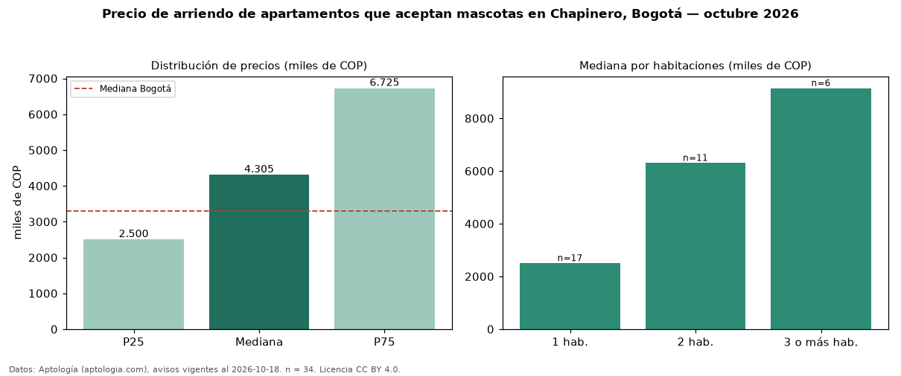

Precio de arriendo de apartamentos que aceptan mascotas en Chapinero, Bogotá — octubre 2026
COP 4,31 millones al mes es el canon mediano de apartamentos que aceptan mascotas en arriendo en Chapinero, Bogotá (n = 34 avisos). Frente a la mediana de todos los apartamentos en arriendo de Chapinero (COP 2,80 millones, n = 310), queda 54 % por encima; este segmento reúne el 11 % de esos avisos. Por metro cuadrado, la mediana es COP 59.688/m² al mes (n = 34), 5 % por encima del conjunto de referencia (COP 56.667/m²). La mitad central de los avisos va de COP 2,50 millones a COP 6,72 millones (razón 2,7), una dispersión alta. El área mediana anunciada es 70 m². El segmento con más oferta es el de 1 habitación (17 avisos, mediana COP 2,50 millones); pasar de 1 habitación a 3 o más habitaciones cambia la mediana +266 %. La administración mediana declarada es COP 750.000 al mes (n = 26), aparte del canon. El estrato más frecuente es 4 (41 % de los avisos con estrato). Datos: Aptología (aptologia.com), CC BY 4.0 — https://www.aptologia.com/arriendo/bogota/chapinero. Archivos: PDF, CSV con las cifras y gráfica PNG.

| Avisos únicos | 34 |
|---|---|
| Percentil 25 | COP 2.500.000 |
| Mediana | COP 4.305.243 |
| Percentil 75 | COP 6.725.000 |
| Mediana por m² | COP 59.687 |
Fuente: avisos vigentes de portales inmobiliarios recopilados por Aptología, deduplicados (mínimo 30 avisos únicos por celda). Precios pedidos, no cerrados. Fecha: 2026-10-18.